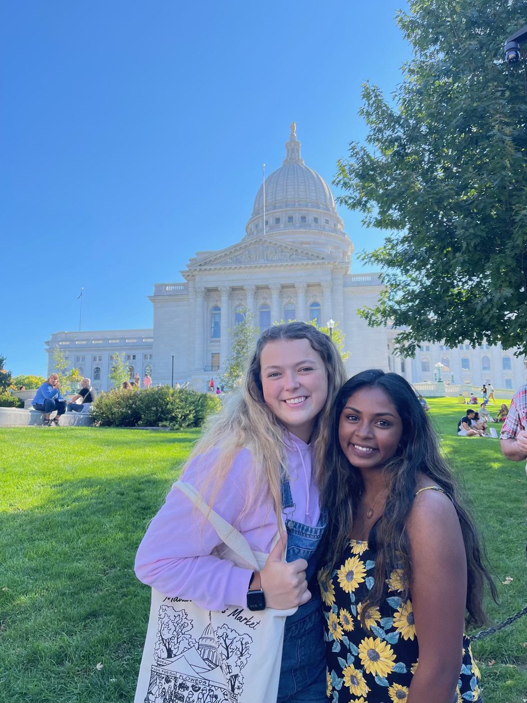

Welcome! I'm here to tell you a bit more about my current endeavors in life.
As you previously saw on the home page, I currently go to University of Wisconsin-Madison as a sophomore and I am studying computer science. Academically, I am on track to graduate on time or even a semester early. My courses have been pretty tough but I've been able to navigate my way throughout these courses so far.As for extracurriculars, I've attended different events hosted by different organizations like Indian Student Association, Software Development Club, and the Multicultural Students Association. I also work at the DoIT Help Desk as an IT Support specialist, and I've been doing this for almost a year now. In my free time, I enjoy doing just about anything with my friends. In the warmer weather on the weekends, we enjoy going to the local farmers market, exploring State Street, and trying out some new restaurants and cafes.I'm excited to see what the future has in store for me and I have a few goals in mind! I'm learning to take things day by day and soak up the time I have in college. University of Wisconsin-Madison has already given me so many different memories to keep for the rest of my life.